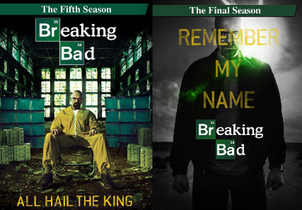

Jesse Pinkman
"O Ajudante"
"O Ajudante"
"Heisenberg"
"A Moralista"

A Temporada 4 é frequentemente considerada a melhor temporada de Breaking Bad, com uma narrativa intensa e cheia de reviravoltas. A luta entre Walter White e Gus Fring atinge seu ápice, culminando em um confronto épico que mantém os espectadores na ponta dos assentos.

A Temporada 5 é a conclusão épica da série, onde todas as tramas se entrelaçam para um desfecho emocionante. A ascensão de Walter White ao poder e as consequências de suas ações culminam em um final memorável que deixa uma marca duradoura na história da televisão.